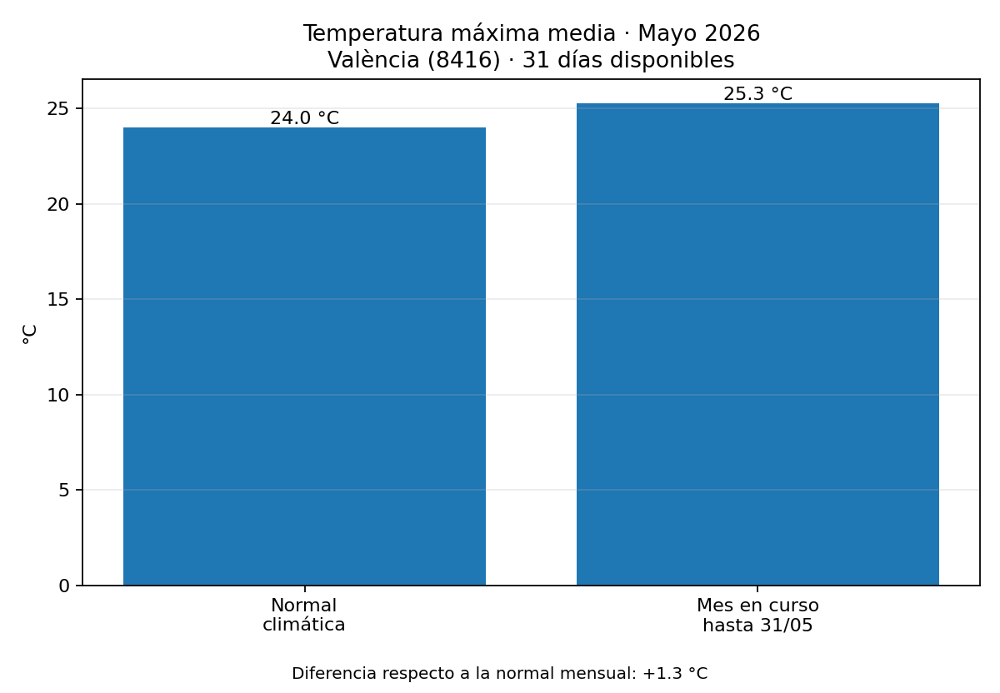
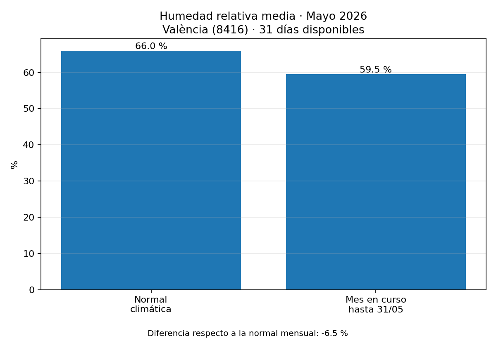
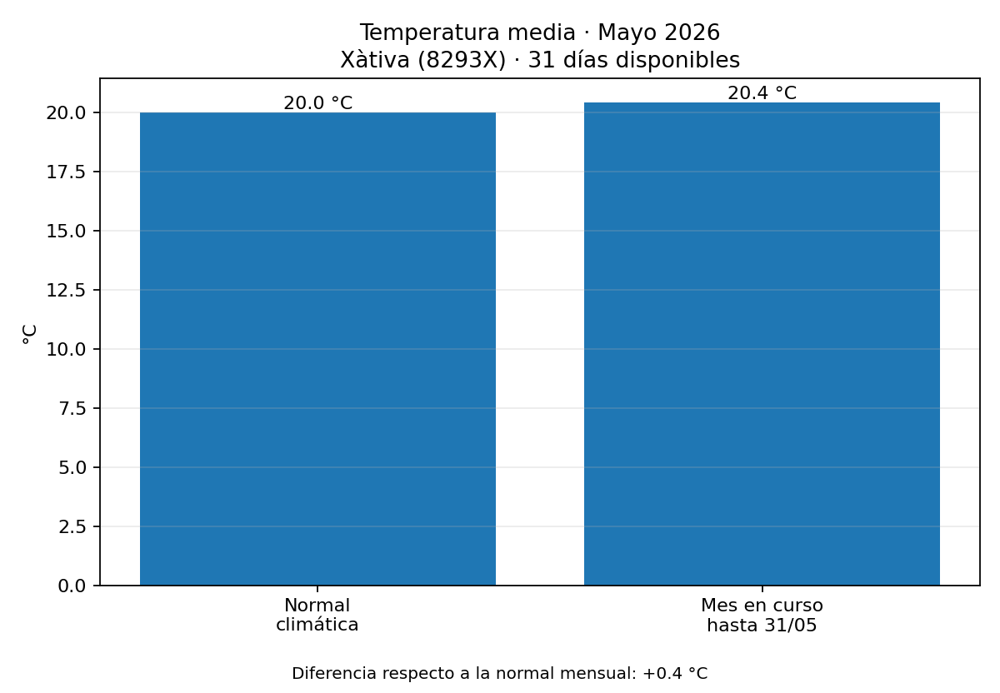
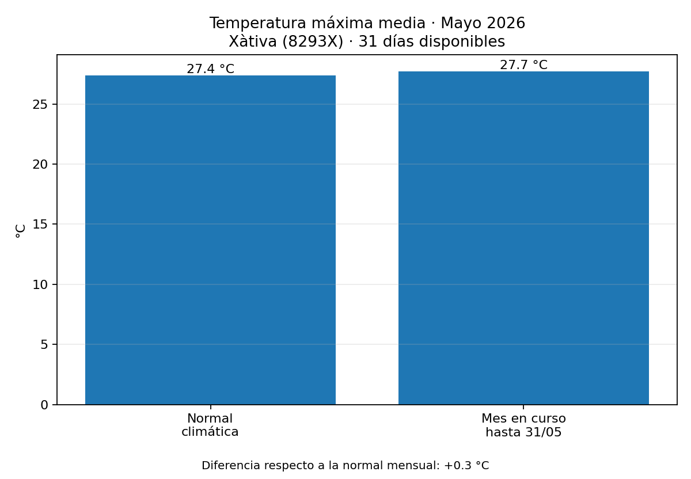

Temperatura media
Sin datos suficientes. AEMET devuelve 429: demasiadas peticiones. Espera un poco y vuelve a ejecutar.
Periodo: Mayo 2026
Variables: Temperatura media, Temperatura máxima media, Humedad relativa media
Actualización del visor: 04/06/2026 18:27

Último día disponible: 2026-05-31 · Días usados: 31

Último día disponible: 2026-05-31 · Días usados: 31

Último día disponible: 2026-05-31 · Días usados: 31

Último día disponible: 2026-05-31 · Días usados: 31
Fuente: AEMET OpenData. Elaboración automática para seguimiento del mes en curso.